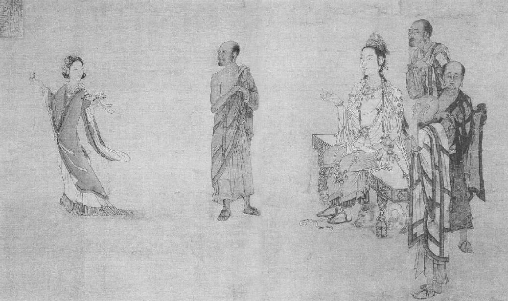

第二十六章 仙居
东坡在惠州的生活，谁都知道是和朝云的爱情相关联的。苏东坡去世之后，他在白鹤峰的住所经后人辟为“朝云堂”。王朝云是杭州姑娘，她所生的婴儿夭折之时，苏东坡在第一次放逐北归的途程中，真是使人黯然神伤。从那时起，朝云就一直和苏东坡生活在一起，现在又随同他放逐出来。秦观赠她的诗说她美如春园，目似晨曦。她到惠州时还年轻，才三十一岁。苏东坡那时五十七，虽然二人年龄不同，而情爱无殊。朝云聪明愉快，活泼有生气。苏东坡一生的几个女人之中，朝云最称知己。她爱慕苏东坡这个诗人，自己也很向往他那等精神境界。苏东坡对朝云在他老年随同他流离颠沛，不但把感激之情记之以文字，并且写诗赞美她，这些诗使他们的热情化为共同追寻仙道生活的高尚友谊。
苏东坡总是称朝云为“天女维摩”（表示纯洁不染之意）。在佛经里有这样一个故事：在释迦牟尼以一个森林的圣人身份住在某一小镇时，一天，与门人讨论学问。空中忽然出现一天女，将鲜花散落在他们身上，众菩萨身上的花都落在地面，只有一人身上的花瓣不落下来。不管别人多么用力去刷，花朵硬是沾着不掉。天女问他们：“为何非要把花瓣从此人身上刷落？”有人说：“花瓣与佛法不合，故而不落。”天女说：“不然，此非花瓣之过，而是此人之过。已然信佛之人，若还有人我之分，其言行必与佛法相违背。如能消除此种分别，其生活自然合乎佛法。花瓣落在身上而脱落下来的众菩萨，都已消除一切分别相。正如恐惧，若心中不先害怕，则恐惧不能入袭人心。若众门徒贪生怕死，则视听嗅味触各感觉，才有机会骗他们。已经能征服恐惧，则能超越一切感觉。”
苏东坡携眷到惠州那年，给朝云写了两首诗词，其特点是在情爱之中夹杂有宗教情感。第一首是到后半个月内写的，他称赞朝云，说不像白居易侍妾小蛮，因为小蛮在白居易老时离开了他，而是像通德，她终生陪伴伶玄。他颇以朝云的孩子夭折为恨，他把她比作天女维摩，敬拜佛祖。她抛却长袖的舞衫，而今专心念经礼佛，不离丹灶。一旦仙丹炼就，她将向他告辞，进入仙山。那时她不会再如巫山神女那样为尘缘所羁绊了。在第二首词里，爱情升华达到宗教程度，更为明显。其中感情与宗教交织而为一。那首词是：
白发苍颜，正是维摩境界。 空方丈、散花何碍。 朱唇箸点，更髻鬟生菜。 这些个，千生万生只在。 好事心肠，着人情态。 闲窗下、敛云凝黛。 明朝端午，待学纫兰为佩。 寻一首好诗，要书裙带。
朝云对道家长生术也感兴趣。在惠州，苏东坡觉得到了应当认真炼丹之时。在惠州那一段时期，不论住在河的左岸或右岸，他总把自己的书斋叫“思无邪斋”——中国读书人给书斋起名字，总是用几个字表示他的人生哲学。苏东坡的思想已然发展到不但喜爱淳朴的生活和纯洁的思想，而且到相信纯洁的思想才是淳朴生活的基础。控制自己的心神作为长生不老的不二法门，是儒道佛三教结合的结论。他在《思无邪丹赞》里所言，并不只此。文内称他专心在小腹下部修炼丹田之气。这篇文章是一篇韵文，是他的得意之作，但用的是道家法术的神秘文辞，译成英文而不加冗长的注释，是不易看懂的。简短说来，他说到吸收饮食的元气、草木的精华，再借铅汞之助，就可以培养元力。还要再辅以日精月华的吸取。他要炼制的是“思无邪丹”。他相信而今是正当其时，他在一段杂记中说，白居易也曾试过炼制仙丹，但未成功。白居易曾在庐山建一草堂，其中有一丹炉，但是那座丹炉及丹锅在他接到朝廷任命为官之前一日坏掉。这就表示长生不死与享荣华富贵是不可同时兼顾的。所以人必须决定是在热闹场中过此一生，还是逃离此红尘世界而求长生。现在苏东坡相信自己已经向过眼云烟般的繁华梦告别，希望能求得长生不老之术。
究竟苏东坡对在肚脐之下炼丹田之气以求长生，是抱着何等程度的严肃态度，则颇不易言。他是个观察锐敏的人，虽然他也玩玩丹汞的道家神秘法术，他已然看出来，健康之道在于遵从合乎常识的几条简单规则。在他给患有肺痨病的陆道士的一封短信里，他说“嵇中散云，守之以一，养之以和，和理日济，同乎大顺”，再辅以山中道士所得的卫生环境与运动锻炼，与现代在疗养院中病人所能享得的利益，即是饮泉水、晒朝阳，等等养生之道。
《天女献花图》 中国画 刘松年 宋 台北故宫博物院藏
图中天女手捧花篮，边舞边散，对面菩萨神情安逸，微笑观看，周围几位罗汉则已为天女的舞姿所吸引，面露欣赏之色。图中布局疏密有致、离合有序。线条或刚或柔，表现出衣衫的不同质感。画面动静结合，不着背景，给人无穷想象。
另有一条奇怪的办法，朝云也与苏东坡共同合作实行，以求长生。大概从绍圣二年（一〇九五年），苏东坡开始独自睡眠，不再亲近女人。苏东坡在给朋友的一封信里说：“养生亦无他术，独寝无念，神气自复。”另给张耒的一封信里，他说自己已经独宿一年半，觉得颇有得益。他说节欲之难，犹如弃绝肉食开始吃素，并以下列方法劝人：比如，决定不吃肉时，不要决定此后永远不再吃肉。可先试戒三个月，自然易于实行。三个月之后，可再延长三个月，如此继续下去。
朝云在宗教上陷入了进退两难的境况。她在尼姑义冲的教导之下，已经皈依佛教。对男女“云雨”一事，佛教有其独特的态度。按佛理所示，吾人凭感官所见的世界都属虚幻，其终极的真实则是“佛”。人的意识则被知觉习性所包围。人若想得解脱，必须打破知觉的习惯，逃避感官世界的幻觉。苏东坡和朝云（她现在可以算是苏东坡的妻子了），不管儒家怎样看法，现在可以说都是佛教徒。他俩一同创建放生池，根据苏东坡说，朝云很乐于行善，这是佛教谆谆教训的。
但是苏东坡还要严肃得多。在绍圣二年（一〇九五年）后半年，他患痔疮甚为严重，失血甚多。他自己治疗，不但遍读中国医书，而且常把旁人分别不清的药草写文字说明其异同性质。关于痔疮，他的学说是这样，比如身内有虫啮咬，治疗之法是“主人枯槁，则客自弃去”。一切普通食物他全不吃，连米在内，只吃不加盐的麦饼和胡麻、茯苓。如此数月，暂时痊愈。
这时，他对炼丹的成功可能渐趋怀疑。他觉得自己感情太容易激动，不容易修炼成仙。他给子由写信，论到朱砂保存的方法，说子由性情平静，修炼较易成功。《山海经》是中国古代述说远方怪异的书。苏东坡写诗论到《山海经》时，他说：“金丹不可成，安期渺云海。”即便炼成长生不死之药，又有何用？只要练习深呼吸以控制元液足矣，而他已开始练习了。
他对来日如何，全然没有把握。他刚一到达，说要以惠州为家，可是他却永远不知道下一步会被派往何处。他若能一直在惠州住下去，自可把孩子们全家自宜兴迁来。在绍圣二年（一〇九五年）九月，朝廷有皇家祭祖大典，按习俗，应当实施大赦。那年年终，他听说元祐诸臣不在大赦之列。这消息至少有镇定剂的功效，使他觉得心情更为安定。他写信向程之才说：“某睹近事，已绝北归之望，然中心甚安之。未说妙理达观，但譬如元是惠州秀才，累举不第，有何不可？”又在给至交孙勰的信里说：“今北归无日，因遂自谓惠人。”给曹辅的信内说：“近报有永不叙复指挥，正坐稳处，亦且任运也。……见今全是一行脚僧，但吃些酒肉尔。”
现在一切既已确定无疑，苏东坡决定自己盖房子住。那年下半年，他给王巩写了一封长信。他说：“某到此八月，独与幼子一人、三庖者来，凡百不失所。风土不甚恶。某既缘此绝弃世故，身心俱安，而小儿亦遂超然物外。非此父不生此子也，呵呵。……子由不住得书，极自适，道气有成矣。余无足道者。南北去住定有命，此心亦不念归。明年买田筑室，做惠州人矣。”
次年三月，苏东坡开始在河东四十尺高的一座小山的顶上盖房子，离归善城的城墙很近。经过周期性的战事与破坏，这栋房子倒一直保存到现在，人都称之为“朝云堂”。在苏东坡的作品里，这栋房子叫“白鹤居”，北望可见河上风光，河水由此折向东北流去。这栋房子占地约半亩宽，后面为山所限，前面地势陡然下陷，当初设计此房子时，必须适应那有限的地皮，所以一头宽，一头窄。靠城墙那边早已有了两栋小房子。一家是翟秀才，一家是酿酒老妇林太太。这两家既是苏家的近邻，也是好朋友。苏东坡掘了一座四丈深的井，林翟两家也颇为受益。另一方面，苏东坡却可以赊酒喝。后来，他又从此被调走，但还不断给此老妇寄送礼品。
苏东坡盖的这栋房子十分精雅，共有房屋二十间。在南边一块儿小空地上，他种了橘子树、柚子树、荔枝树、杨梅树、枇杷树，几株桧树和栀子树。他告诉帮他物色这些花木的那位太守，要给他找中等的树，因为他已经老大，不能等小树长大，大树又不易移植。倘若树大，苏东坡就告诉朋友在移树之前，先要标出范围。中国人移树的方法，是先斫一条主根和一条中根，再用土埋起来，这样让树先渐渐适应。在第二年，另一面的主根也须斫断，再用土盖好。第三年，在树的四周围标好了方向之后，再将树移植，栽种之时，必须留意仍然合乎原来的方向。苏东坡的思无邪斋，现在是在白鹤峰上，另一间房子他名之为“德有邻堂”。孔子在《论语》里说“德不孤，必有邻”，这个堂名便是由此而来。这两个堂名都是四个字，而普通都是用三个字，苏东坡以四个字做堂名，居然开创了一时的风尚。邻人的房子在他的房子后面的东北，完全被苏东坡的房子遮蔽住。他的前门向北，正对河流，数里乡野的美景一览无余，白水山和更为遥远的罗浮山的庞大山脉也可望见。房子上梁时他写的文章，描写从房子各方面所见的景色。上梁就等于奠基，是附近邻居的一件大事。所有邻居都带着鸡和猪肉前来道喜。写来供一般民众唱的喜歌，一共六节，起头都用类似“起锚了”或是像莎士比亚诗里的“嘿嗬”等声音：
儿郎伟！抛梁东！ 儿郎伟！抛梁西！
六节歌都是由东西南北四方描写风光，再加上向上看与向下看。东方山上，一个寺院依偎在乔木参天的树林之中。在春季，苏东坡享受甜蜜的春睡时，他能听见寺院传来的钟声。向西俯视，可以看见虹形的桥梁横卧于碧溪之上，每逢城中太守夜间来访，他可以看见长堤上灯光明亮。在南方，老树的影子映入深深的清溪里，在他的花园中，他自己种了两棵橘子树。最美的风景是在北面，河流往城镇婉转流去，正好抱山麓而过。岸上附近，有一个垂钓佳地，他可以一整上午在那儿消遣，忘记了时光的逝去。
他祈求上苍降福，祈求农民粮食满仓，祈求海上风平浪静。乡间空气清洁，农民可以常保健康，五谷丰登，林太太能有酒赊给他喝。最后为一切朋友祈福，愿大家享福气，寿命长。
但是，他自己又遇到十分痛心的事。在绍圣二年（一〇九五年）七月五日，新房子尚未竣工，朝云得了一种瘟疫，竟而身亡（原文笔误，朝云去世是在绍圣三年，一〇九六年——编者注）。他们住的是疟疾地区，她得的可能是疟疾。苏东坡的儿子过并未在家，出外去运木材，朝云直到八月初三才埋葬。因为她是虔诚的佛教徒，她在咽气之前还念《金刚经》上的偈语：
一切有为法，如梦幻泡影。 如露亦如电，应作如是观。
按照她的心愿，苏东坡把她安葬在城西丰湖边的小山上，离一座佛塔和几个寺院不远。坟墓之后，山溪落下如瀑布，水流入湖中。坟墓在一个隐僻的所在，山坡分数条岗棱自高而下，犹如衣裳的褶纹。墓后是一带大松林。站在墓旁可以看西方山岭后的塔尖，往左右两三里，有几座大寺院，游客可听见黄昏的钟声与稷稷的松涛。邻近寺院的僧人筹款在墓上修了一座亭子，用以纪念朝云。
埋葬了三天之后，在八月初六，夜里风狂雨暴。第二天，农人看见墓旁有巨大的足迹。大家相信是有佛来伴她同往西方乐土去了。八月九日，夜里要念经超度亡魂。在典礼开始之前，苏东坡和儿子一同去细看那巨大的足迹。
苏东坡对朝云的情爱不但记在墓志铭上，还表现在朝云死后不久苏东坡写的两首诗词上。在《悼朝云》那一首里，他以朝云的幼子夭折为恨，不幸岁月无情，抛人而去。他只能诵小乘佛经以慰亡魂。朝云生在世上，想是要还前世欠下他的一笔债。现在转瞬之间，她已不在，也许是进了极乐世界。佛塔去此坟墓不远，每日黄昏她可以去听经访道，以慰岑寂。
苏东坡以前曾经写过三首极其精妙的诗，记松风亭畔的梅花，足以显示他的诗才。那年十月，梅花又盛放，他写了一首词，显然是以梅花象征长眠于地下的朝云。那个象征至为相宜，因为月下梅花一向认为是白衣仙女，隐约朦胧，绝与尘世俗态不同其格调。这首词的用语既像是写花，又像写他心爱的女人。那首词是：
玉骨那愁瘴雾？冰姿自有仙风。 海仙时遣探芳丛。倒挂绿毛幺凤。 素面翻嫌粉涴，洗妆不褪唇红。 高情已逐晓云空。不与梨花同梦。
丰湖过去一向是苏东坡喜爱的野餐处所。朝云埋葬之后，他不忍心旧地重游。他已经找圣洁之地把朝云埋葬，他二人共同开辟的放生池，就在下面，芳魂一缕，举目下望，也可少得慰藉。
从现在起，苏东坡一直鳏居未娶。房子在次年二月竣工，果园也已种上果木，水井已经打好，长子迈已经把过和自己的家眷迁来惠州。次子迨则和他的妻儿仍留在宜兴，因为苏东坡对他抱有厚望，希望他专心准备，参加科举考试。同两个儿子两个儿媳妇来的是三个孙子，两个是长子的，一个是三子的。大孙子已经二十岁，已然成家。二孙子符，也到了娶妻的年龄，苏东坡给他安排，娶了子由的外孙女，就是子由亡婿王适的女儿。盖这栋房子，几乎把苏东坡的钱花光了，现在就指望迈微薄的薪俸。迈在运用了些关系之后，获得曲江附近的县令职位。
正在苏东坡以为可以晚年在惠州安居下去之际，他又被贬谪出中国本土之外去了。他的新居落成之后大约两月光景，他接到远谪海南岛的命令。根据一个说法，他曾写了两行诗，描写在春风中酣美的午睡，一边听房后寺院的钟声。章惇看到那两句诗，他说：“噢！原来苏东坡过得蛮舒服！”于是颁发了新贬谪的命令。